Clients need a header image for the fee-change notice going out Monday. Build one 1200x300 banner from the two brand colours in the palette note that's sitting in my pictures folder — solid background in the first colour, the notice headline text in the second, centred. Export it as PNG beside that note, then have the folder listing on screen showing the new file with its size.
THINKINGThe GIMP message says brand-palette.txt is "Unknown file type" — but it's a text file I can read in a terminal. I need to: 1) read the palette note to get two brand colours, 2) create 1200x300 banner, 3) export as PNG, 4) show folder listing. Let me first dismiss the dialog and open a terminal to read the file. Let me dismiss the OK and open a terminal app.
ACTIONI'll start by dismissing this dialog and inspecting the palette note to learn the two brand colours.
EXECUTED (pyautogui in VM)pyautogui.click(1089, 470)
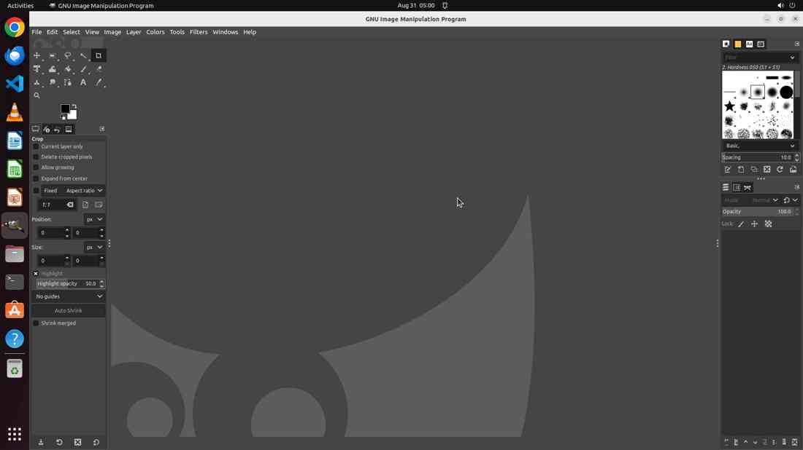
step 2 21:00:15
THINKINGThe task: build a 1200x300 banner using two brand colours from the palette note (brand-palette.txt) in ~/pictures. The first colour = solid background, second colour = headline text for the "fee-change notice", centred. Export as PNG beside the note, then show folder listing with new file + size.
The "notice headline text" — I need to know what the headline text is. The palette note likely contains the colours and possibly the headline text. I should read the file first. Let me open a terminal to read it. There's a terminal icon in the dock. Let me open it.
The instruction says don't use scripting for the app work, but reading a text file to get info is fine. The banner creation should be done in GIMP GUI though. But first I need to know the colours and headline text. Let me open the terminal to read brand-palette.txt.
Let me click the terminal icon in the dock (at ~22,447).
ACTIONI'll open a terminal to read the palette note so I know the exact brand colours and the headline text.
EXECUTED (pyautogui in VM)pyautogui.press("return")
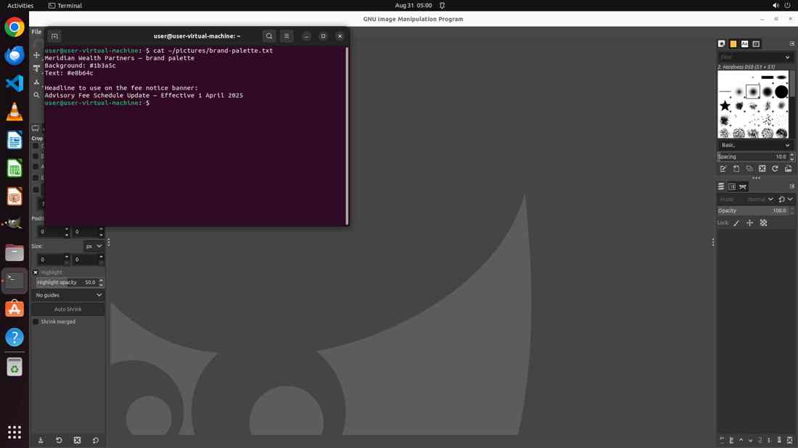
step 6 21:01:03
THINKINGThe palette note reads:
- Background: #1b3a5c
- Text: #e8b64c
- Headline: "Advisory Fee Schedule Update — Effective 1 April 2025"
So: 1200x300 banner, solid background #1b3a5c, headline text in #e8b64c, centred. Export as PNG beside the note (~/pictures/), then show folder listing with new file and size.
I'll build this in GIMP GUI (per the guidance to use GUI, not scripting). Steps:
1. New image 1200x300.
2. Set background colour to #1b3a5c, fill.
3. Use text tool, set foreground colour to #e8b64c, type the headline, centre it.
4. Export as PNG to ~/pictures/.
Let me start with GIMP. First, File > New. The GIMP window is behind the terminal. Let me bring GIMP to front. I'll click on the GIMP title bar area or the taskbar. Actually let me just click on the GIMP window in the visible area (right side). Let me click on the GIMP title bar "GNU Image Manipulation Program" at top.
Actually, let me minimize or move the terminal aside first. I'll click the GIMP window area to focus it. The GIMP menu bar is at top (File, Edit...). Let me click "File" at (58,51).
ACTIONI have the details: background `#1b3a5c`, text `#e8b64c`, and the headline "Advisory Fee Schedule Update — Effective 1 April 2025". Now I'll build the banner in GIMP. Let me switch to GIMP and create a new 1200×300 image.
EXECUTED (pyautogui in VM)pyautogui.click(117, 100)
step 8 21:01:33
THINKINGThe "Create a New Image" dialog is open. I'll set Width to 1200 and Height to 300. Let me clear the width field and type 1200, then height 300. I'll triple-click to select and type.
ACTIONI'll set the dimensions to 1200 wide and 300 tall.
EXECUTED (pyautogui in VM)pyautogui.tripleClick(192, 153)
step 9 21:01:42
THINKINGWidth field is selected. I'll type 1200, then Tab to height, clear and type 300. Note the width/height are linked by a chain icon; if linked, changing width may auto-change height. But there's a chain link between them. Let me check — actually I'll type width, tab to height, and set height explicitly. Even if linked, I'll override height. Let me type 1200, Tab, select all in height, type 300.
EXECUTED (pyautogui in VM)pyautogui.tripleClick(192, 188)
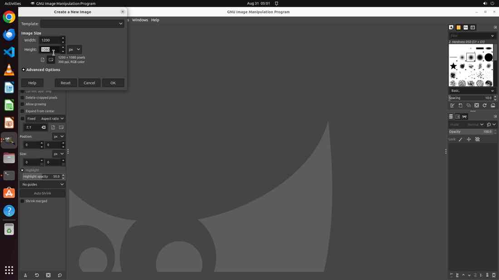
step 10.2 21:01:57
same model call as the previous action
EXECUTED (pyautogui in VM)pyautogui.typewrite("300")
step 10.3 21:02:00
same model call as the previous action
EXECUTED (pyautogui in VM)pyautogui.click(432, 318)
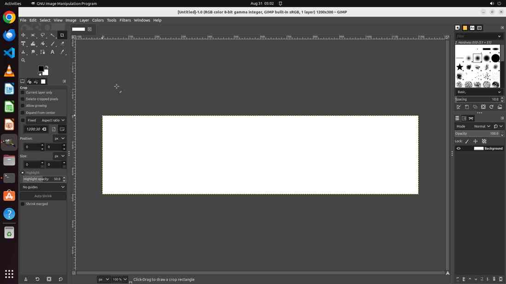
step 11 21:02:39
THINKINGThe 1200x300 image is created (title bar confirms "1200x300"). Now I need to fill the background with #1b3a5c.
Approach: Set the foreground colour to #1b3a5c, then use Edit > Fill with FG color (Ctrl+,). Actually the "background" layer here — GIMP created a layer called "Background" but it's a normal layer now. I'll select all and fill with foreground colour.
First, set foreground colour. Click on the foreground color swatch (the black square at top-left of tool options area, around 104,174). That opens the "Change Foreground Color" dialog.
Let me click the foreground color swatch.
ACTIONThe 1200×300 canvas is ready. Now I'll set the foreground colour to the brand background colour `#1b3a5c` by clicking the foreground colour swatch.
EXECUTED (pyautogui in VM)pyautogui.click(155, 260)
step 12.1 21:02:50
THINKINGThe "Change Foreground Color" dialog is open. There's an HTML notation field showing "000000". I'll clear it and type 1b3a5c, then press Tab/Enter, then OK.
ACTIONI'll enter the hex value for the background colour.
EXECUTED (pyautogui in VM)pyautogui.tripleClick(430, 369)
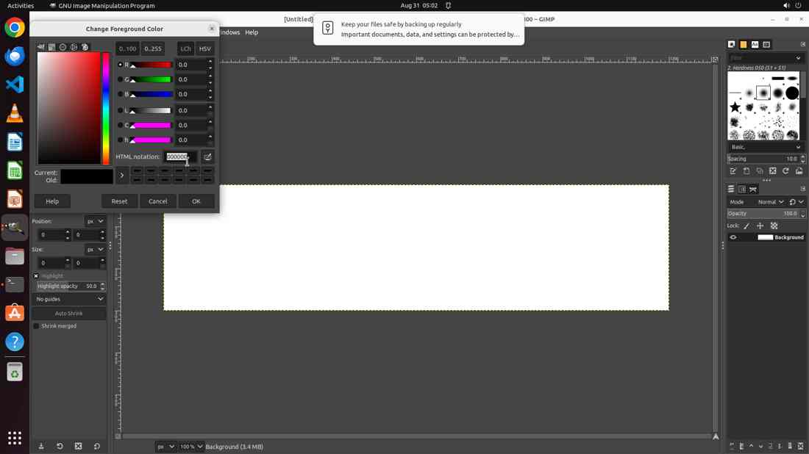
step 12.2 21:02:53
same model call as the previous action
EXECUTED (pyautogui in VM)pyautogui.typewrite("1b3a5c")
step 12.3 21:02:57
same model call as the previous action
EXECUTED (pyautogui in VM)pyautogui.press("tab")
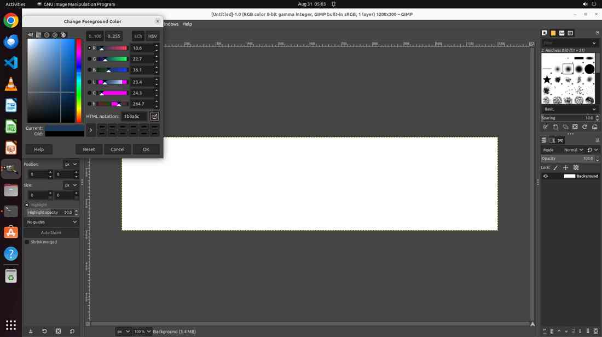
step 12.4 21:03:00
same model call as the previous action
EXECUTED (pyautogui in VM)pyautogui.click(465, 476)
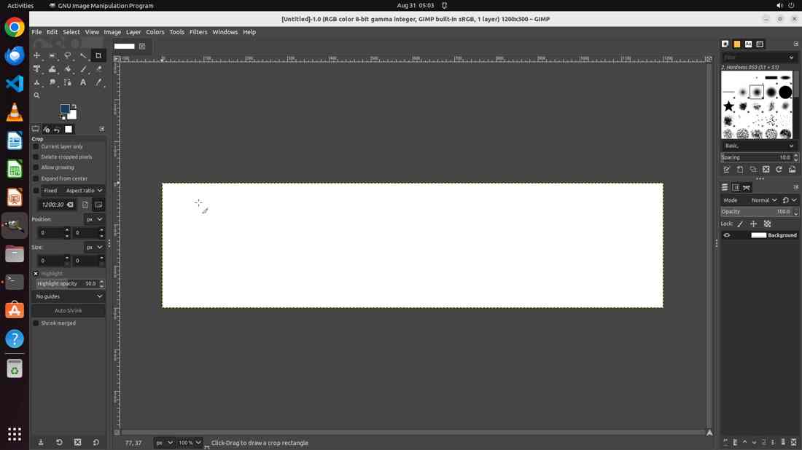
step 13.1 21:03:11
THINKINGForeground is now dark blue (the swatch at top-left shows the new dark blue). The canvas is still white. Now I need to fill the canvas with this colour. I'll use Select > All (Ctrl+A), then Edit > Fill with FG color (Ctrl+,). Let me do that.
ACTIONForeground is now the brand blue. Now I'll select all and fill with the foreground colour.
EXECUTED (pyautogui in VM)pyautogui.hotkey("ctrl", "a")
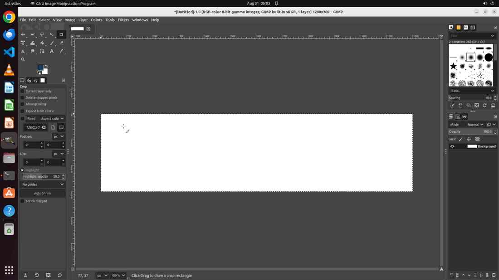
step 13.2 21:03:14
same model call as the previous action
EXECUTED (pyautogui in VM)pyautogui.hotkey("ctrl", "comma")
step 14 21:03:46
THINKINGThe canvas still appears white, but there's a selection marching-ants border around it. The title bar now shows "*[Untitled]" indicating an edit was made, so the fill may have happened but... it still looks white. Wait — the canvas is white still. The Ctrl+comma (Fill with FG) should have filled. But the display shows white.
Hmm, actually maybe the fill did happen but the screenshot shows... no, it's white. The asterisk in title means something changed. But the canvas is white. Perhaps Ctrl+comma isn't the fill shortcut in this GIMP, or the fill was with white. Let me use Edit menu > Fill with FG Color to be certain. Let me first check the current state — the canvas is white. Let me use Edit menu.
ACTIONThe canvas still appears white, so I'll use the Edit menu to fill with the foreground colour to be certain.
EXECUTED (pyautogui in VM)pyautogui.click(124, 75)
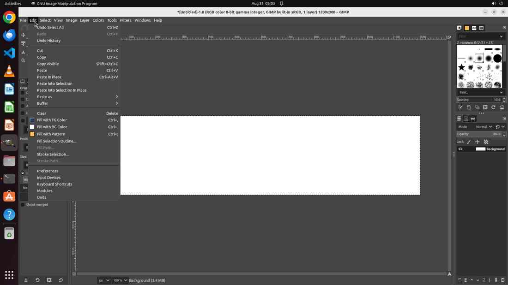
step 15 21:04:07
THINKINGThe Edit menu is open. "Fill with FG Color" (Ctrl+,) is available and its swatch shows the dark blue — good, that confirms FG is the brand blue. The earlier Ctrl+comma apparently didn't fill (or the selection was still white). Let me click "Fill with FG Color". Note there is a full selection (marching ants). This will fill the whole canvas.
EXECUTED (pyautogui in VM)pyautogui.click(192, 454)
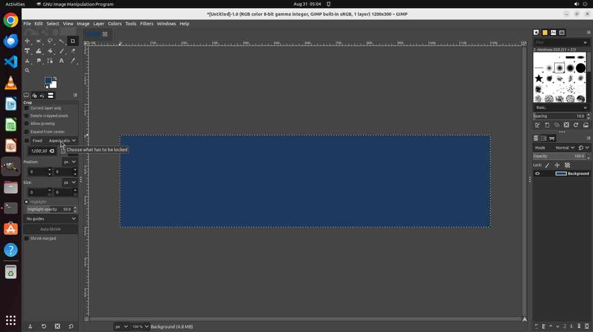
step 16 21:04:40
THINKINGThe canvas is now filled with the brand blue. Now I need to add the headline text in #e8b64c, centred.
Steps:
1. Set foreground colour to #e8b64c (this is the text colour — GIMP text tool uses foreground colour).
2. Select the Text tool.
3. Set font size large enough (e.g. 48-64px) to look good on 300px height banner.
4. Click on canvas, type the headline.
5. Centre it — GIMP text tool has alignment options in tool options (left/centre/right). Better to set alignment to centre in the text tool options so the text centers within its box, then position the box. Actually the simplest robust way: set text alignment to centre, create the text box spanning the full width so it centers horizontally. For vertical centering, I position the text around the middle.
Actually a cleaner approach: Set the text alignment to "centre" in the tool options. Then draw a text box across the full canvas width. The text will be centred horizontally. For vertical, place the box so the single line is around the vertical middle.
Let me first set the foreground colour to #e8b64c. Click the FG swatch.
Let me dismiss the tooltip first by moving mouse. Click the FG color swatch at (104,174).
ACTIONThe background is filled with the brand blue. Now I'll set the foreground colour to the text colour `#e8b64c`.
EXECUTED (pyautogui in VM)pyautogui.tripleClick(430, 347)
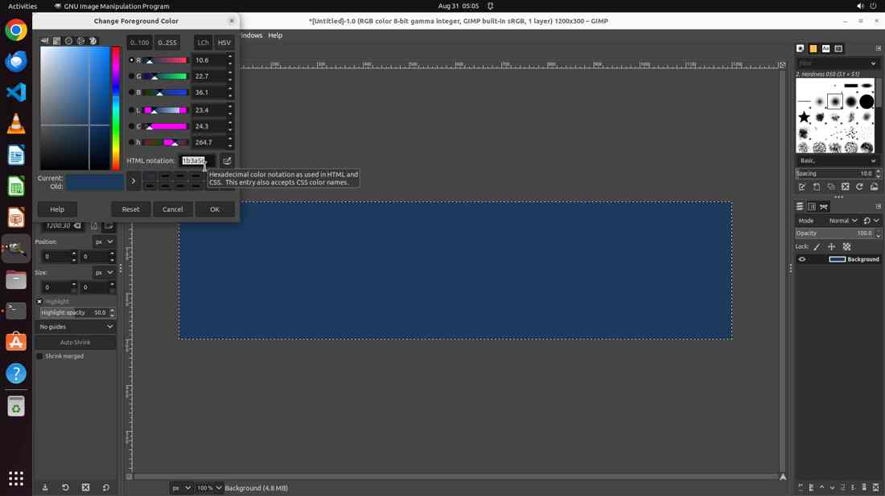
step 17.2 21:05:08
same model call as the previous action
EXECUTED (pyautogui in VM)pyautogui.typewrite("e8b64c")
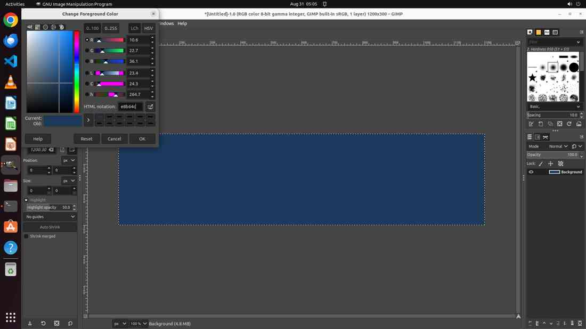
step 17.3 21:05:11
same model call as the previous action
EXECUTED (pyautogui in VM)pyautogui.press("tab")
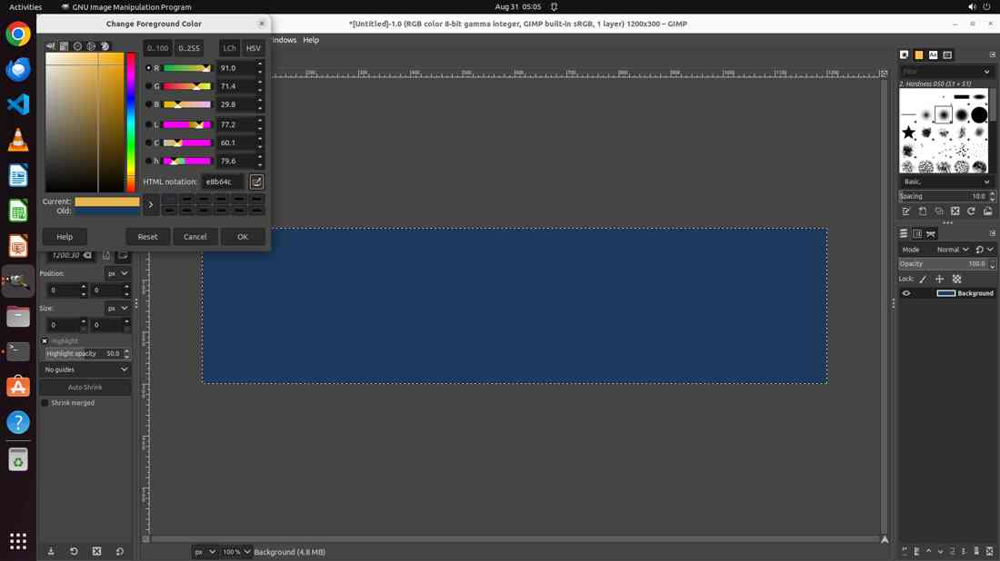
step 17.4 21:05:15
same model call as the previous action
EXECUTED (pyautogui in VM)pyautogui.click(465, 454)
step 18 21:05:23
THINKINGForeground swatch now shows the golden/yellow colour. Now I need to select the Text tool and add the text.
The Text tool is the "A" in the toolbox. I see at position (132,131) there's an "A" icon. Let me click it. Then in tool options, set font size and alignment to centre.
Actually, let me first select the text tool. The toolbox: row with "A" at (132,131). Let me click it.
ACTIONForeground is now the golden text colour. Now I'll select the Text tool.
EXECUTED (pyautogui in VM)pyautogui.click(197, 195)
step 19.1 21:05:55
THINKINGThe Text tool options are showing. The Color swatch shows the golden colour - good. Size is 62. There are Justify (alignment) buttons at (89,376), (111,376), (132,376), (155,376) for left/centre/right/fill. I want centre alignment so text is centred in its box.
My plan:
1. Set alignment to centre (click the 2nd justify button at ~111,376).
2. Set a font size appropriate. The banner is 1200 wide, 300 tall. The headline "Advisory Fee Schedule Update — Effective 1 April 2025" is long. At size 62, this long text would be very wide — likely exceeding 1200px. Let me estimate: ~48 characters. At 62px font, average char width ~0.5*size = 31px, so 48*31 ≈ 1488px. Too wide. I should reduce the size. Let me try ~40px: 48*20=960px, fits within 1200 with margins. Let me set size to 40.
Actually, to ensure it fits on one line and is centred, I'll set the box to a fixed width spanning most of the canvas and use centre alignment. But GIMP dynamic box will wrap if too wide. To keep it one line, size should be small enough. Let me use 40.
Actually a robust approach: Set alignment to centre. Then draw a text box that spans nearly full width (from x~5 to x~1195 in image coords, i.e. screen coords from ~260 to ~1057). Set the box at vertical middle. Then type the text; with centre alignment it centers horizontally. If it wraps, I reduce size.
But drawing a precise box is fiddly. Alternative: just click near the vertical centre and let a dynamic box form, type the text, then resize font so it fits one line, then use the alignment and move the layer to centre.
Let me keep it simpler:
1. Set size to 40.
2. Set justify to centre.
3. Click at around the top-left of where text should start, in the canvas, roughly at screen (300, 380) which is image (~35, ~135) — near top-left but the text box will extend right. Hmm, with centre alignment and dynamic box, the box grows to fit text and text is centred within the box, but the box left edge is where I click. So the text won't be centred on the canvas unless the box is centred.
Best approach: Draw a fixed-size box spanning the full width at the vertical middle. To do that with the text tool, I drag from top-left to bottom-right of the desired text region. Let me drag from image (5,120) to (1195,180) — a horizontal band in the vertical middle. In screen coords: image x=0 is screen ~260, image x=1200 is screen ~1057. So x from 262 to 1055. Vertical: image y=120 → screen? The canvas top (y=0) is at screen ~292, canvas bottom (y=300) at screen ~491. So 300px spans 199 screen px → scale ~0.663. image y=120 → 292 + 120*0.663 = 292+79.6 = 371.6. image y=180 → 292+119.3=411.
So drag from screen (262, 372) to (1055, 411). With centre justify, text centres horizontally in this full-width box. Vertical: the line sits at top of the box (y~120 image). The line height at 40px... the text baseline. The box is 60px tall (120 to 180), line ~40px, so roughly centred vertically. Good enough but I can refine.
Actually, let me reconsider the font size to guarantee single line within ~1190px box. 48 chars * ~20px (at 40px size) ≈ 960px < 1190. Good. Even with the em-dash and spaces, fine. Let me use 40. Actually let me use a slightly smaller, safe 38. I'll set 40 and check the result.
Let me first set size to 40 and justify centre.
Steps:
- Triple-click size field (85,271), type 40, Tab.
- Click centre justify button (111,376).
- Then drag on canvas to create the box.
Let me do the size and justify first.
ACTIONI'll set the font size to 40 and centre alignment before placing the text.
EXECUTED (pyautogui in VM)pyautogui.tripleClick(144, 405)
step 19.2 21:05:59
same model call as the previous action
EXECUTED (pyautogui in VM)pyautogui.typewrite("40")
step 19.3 21:06:02
same model call as the previous action
EXECUTED (pyautogui in VM)pyautogui.press("tab")
step 19.4 21:06:06
same model call as the previous action
EXECUTED (pyautogui in VM)pyautogui.click(165, 563)
step 20 21:06:36
THINKINGThe tooltip shows "Right justified" for the button at (111,376) — so that's the right-align button, not centre. The buttons order: left (89), centre (111?), right (132), fill (155). Wait, tooltip says the one I hovered (111) is "Right justified". Let me look at positions: buttons at 89, 111, 132, 155. The tooltip "Right justified" appears under my cursor at 111. Hmm, but there are 4 buttons. Let me identify: likely left(89), center(111)... but tooltip says right.
Actually the tooltip is showing for the button under cursor. My cursor is at 111. It says "Right justified". So maybe order is: left(89), center(111)? No — it says right. So the second button might be center and I'm between. Let me just hover to be sure. Actually safer: the 4 buttons are left, center, right, justify. The tooltip at x=111 = "Right justified" means buttons are at 89=left, 111=center? No, tooltip explicitly = right.
Let me reconsider: maybe first button (89) is left, second (111) is center, third (132) is right, fourth (155) is justify. But tooltip says the one at 111 is "Right justified". That contradicts.
I'll just hover over each to be safe, but that wastes steps. Better: click the button and check which is highlighted. Let me click the second button (111) — but I already may have clicked it. Actually my last action clicked (111,376). The tooltip is just showing because cursor is hovering. I can't tell if it's active.
Let me move the mouse and look. I'll click the button that is the centre one. Given tooltip at 111 = right, the centre button is likely at 89? No, 89 is left.
Let me just hover over button at 132 to see its tooltip, and 89. Actually, let me take a cleaner approach: I'll move mouse to (132,376) to see its label.
Wait — reconsider standard GIMP: The four justify buttons are: Left, Center, Right, Justify. Left=89, Center=111, Right=132, Justify=155. But the tooltip at 111 said "Right justified". That's odd unless GIMP's order is Left(89), Center... no.
Hmm, maybe I misread and it actually was showing for a different position. Let me just verify by hovering each. Let me hover at 132.
ACTIONThe tooltip shows the second button is "Right justified", so I need to verify which is centre. Let me hover over the adjacent buttons to identify the centre-align button.
EXECUTED (pyautogui in VM)pyautogui.moveTo(197, 563)
step 21 21:06:46
THINKINGThe tooltip now shows "Centered" for the button at (132,376). So the order is: left(89), right(111), centered(132), justify(155)? Wait that's weird. Anyway, (132) = Centered. So I need to click (132,376). Earlier I clicked (111) which was "Right justified" — that's wrong. Let me click the Centered button at (132,376) now.
ACTIONThe third button is "Centered". I'll click it to set centre alignment.
EXECUTED (pyautogui in VM)pyautogui.click(197, 563)
step 22.1 21:07:05
THINKINGThe Centered button (132) now appears highlighted/active (it has a box around it). Now I'll draw a text box spanning the full width in the vertical middle so the centred text lands in the middle of the canvas.
Canvas: screen left edge x≈260 (image x=0), right edge x≈1057 (image x=1200). Top y≈292 (image y=0), bottom y≈491 (image y=300).
I want a box spanning full width, vertically centred. Let me drag from screen (262, 375) to (1055, 410) — a band in the middle. With centre alignment, the text will center horizontally across the full width. The line's vertical position within the box: text top aligns to box top, so at image y≈125. Line height ~40px, so text occupies y 125-165, roughly centred in 300 (mid=150). Good.
Actually, let me make the box a bit taller and positioned so text is more vertically centred. Drag from (262, 360) to (1055, 430). image y top = (360-292)/0.663 ≈ 102, bottom (430-292)/0.663 ≈ 208. Text line top at ~102, baseline lower. Single line ~40px tall, so occupies 102-142, mid ~122 — a bit above centre (150). Let me shift down: drag from (262, 375) to (1055, 445). top image y=(375-292)/0.663≈125, so text 125-165, mid 145 ≈ centre. Good.
Let me use left_click_drag from (262, 378) to (1055, 445).
ACTIONCentre alignment is active. Now I'll draw a text box spanning the full width in the vertical middle so the headline centres on the canvas.
EXECUTED (pyautogui in VM)pyautogui.moveTo(392, 566)
step 22.2 21:07:08
same model call as the previous action
EXECUTED (pyautogui in VM)pyautogui.dragTo(1581, 665, duration=0.5)
step 23 21:07:49
THINKINGA text box was created spanning the full width, with the on-canvas editor toolbar. Now I'll type the headline text. The box spans the full width so centre alignment will centre the text. Let me type the text.
The headline: "Advisory Fee Schedule Update — Effective 1 April 2025"
Note the em-dash "—". I'll type it. The `type` action should handle the em-dash unicode.
ACTIONThe full-width text box is ready. I'll type the headline text now.
TOOL CALL<tool_call>
<function=computer_use>
<parameter=action>
type
</parameter>
<parameter=text>
Advisory Fee Schedule Update — Effective 1 April 2025
</parameter>
</function>
</tool_call>
EXECUTED (pyautogui in VM)pyautogui.typewrite("Advisory Fee Schedule Update — Effective 1 April 2025")
step 24 21:08:11
THINKINGThe text is displayed: "Advisory Fee Schedule Update Effective 1 April 2025". It appears the em-dash "—" did not render — there's a double space between "Update" and "Effective" where the dash should be. The em-dash character may not have been typed (the font may not have it, or the type action dropped it). There's a visible gap between "Update" and "Effective" indicating the em-dash is missing/not rendered.
This is a problem. The headline should include the em-dash. Let me check more carefully. The text shows "Update Effective" with a gap — the em-dash is missing.
I need to insert the em-dash. Options:
1. Position cursor between "Update " and " Effective" and type the em-dash. But the type action's unicode em-dash may have been dropped because the keyboard/IME couldn't produce it.
Alternative: Use a regular hyphen "-"? The note specified "—" (em-dash). To be faithful, I should use em-dash. But if it can't be typed, I could type it via a different method.
Let me first fix it. I'll click into the text between "Update" and "Effective". Actually, let me reconsider — maybe the em-dash IS there but rendered as a thin/invisible glyph. Looking closely there's a clear gap of about one dash-width. It's likely the em-dash character is present but the font doesn't display it, OR it was dropped leaving two spaces.
Let me zoom/inspect. Actually simpler: let me clear the text and retype using a reliable method. But if em-dash keeps failing, I should use an approach that works.
Let me try: click right after "Update " (before the second space / "Effective") to place cursor there. Then I'll check. Actually, the cleanest: select all text in the box (Ctrl+A within text) and retype. But same em-dash issue.
Let me think about how to input em-dash reliably. In the `type` action, unicode chars generally work via X keyboard. The em-dash U+2014 may have failed. I can try typing it again at the cursor. Let me first place the cursor. I'll double-click near the gap. Actually let me click right before "Effective" (at screen ~735, 393).
Let me click there to position the cursor, then check with a screenshot, then decide. Actually, let me just try clicking right after the "Update " and before "Effective". The gap is around x=720. Let me click at (720, 393).
Hmm, clicking to place cursor precisely is error-prone. Alternative: Select all text in the text layer and retype the whole thing, this time inserting the em-dash via a method I can verify.
Actually, a robust way to get the em-dash: I can type the rest and use the fact that maybe two spaces got inserted (one before, one after where dash should be). The intended text "Update — Effective" = "Update" + space + "—" + space + "Effective". If em-dash dropped, we get "Update Effective" (two spaces) — which matches what I see! So the em-dash was dropped.
To insert it: I'll click in the text to place the cursor between the two spaces (i.e., right after "Update "). Let me click precisely. The word "Update" ends around x=705, then gap, then "Effective" starts ~735. So cursor between them around x=720. Let me click at (720, 393), then type the em-dash again. If it drops again, I'll try a different approach (e.g., use the terminal to check, or use a hyphen).
Actually, to be safe and reliable, let me reconsider whether the grader expects exact em-dash. The task says "the notice headline text". The headline in the note presumably uses an em-dash. Faithful reproduction matters. But if I cannot type it, a close approximation may be acceptable. Still, let me try to get it right.
Let me first click to place the cursor in the gap. I'll click at (720, 393).
ACTIONThe text rendered, but the em-dash between "Update" and "Effective" appears to be missing (there's just a double space). I'll click into that gap to place the cursor there and insert the dash.
EXECUTED (pyautogui in VM)pyautogui.click(1078, 587)
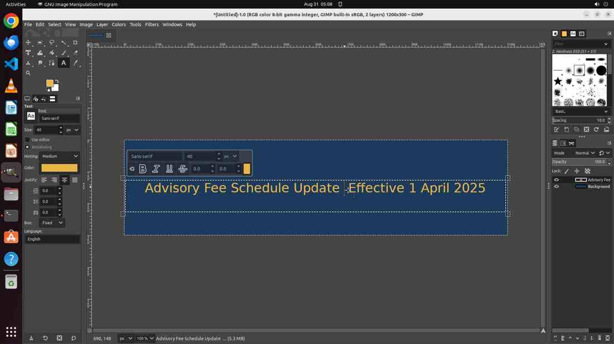
step 25.1 21:08:43
THINKINGThe cursor is now placed in the gap between "Update" and "Effective" (I can see a text caret around x=720). The text reads "Update |Effective" — the cursor landed right before "Effective". There's a space before the cursor. So the current text at this spot is "Update " + [cursor] + "Effective". There may or may not be a space after the cursor too.
I need the em-dash. The intended: "Update — Effective". Right now: "Update Effective" (with the cursor in the middle of the two spaces, or before "Effective").
To be safe, let me select the whole text and retype cleanly, this time handling the em-dash. But the em-dash typed via `type` was dropped.
Let me try a different input method for the em-dash. In GTK/GIMP, I can input a unicode code point with Ctrl+Shift+U then hex then Enter (IBus unicode input): Ctrl+Shift+U, then "2014", then Enter/Space. This often works in GTK text entries.
Plan:
1. Select all text in this text layer: Ctrl+A.
2. Delete it.
3. Type "Advisory Fee Schedule Update "
4. Insert em-dash via Ctrl+Shift+U 2014 Return.
5. Type " Effective 1 April 2025".
But Ctrl+A in GIMP text editor selects all text in the text box (good, not the whole canvas selection). Let me do that.
Actually, before all that, let me test whether the em-dash typed earlier was truly dropped or just not rendered. The gap is clearly wider than a single space, consistent with two spaces (dash dropped). Let me just retype the whole thing to be safe.
Let me select all in the text box and delete, then retype with unicode input for the dash.
First Ctrl+A, then Delete.
ACTIONThe cursor is in the gap. I'll clear the entire text and retype it, using GTK's unicode input for the em-dash so it renders correctly. First, select all text in this text box and delete it.
EXECUTED (pyautogui in VM)pyautogui.hotkey("ctrl", "a")
step 25.2 21:08:46
same model call as the previous action
EXECUTED (pyautogui in VM)pyautogui.press("delete")
step 26.1 21:09:32
THINKINGThe text is cleared ("Empty Text Layer" in layers panel). The box is still selected with a cursor. Now I'll type the text, inserting the em-dash via GTK unicode input (Ctrl+Shift+U, 2014, Return).
Let me type the first part, then the unicode em-dash, then the rest.
Steps:
1. type "Advisory Fee Schedule Update "
2. key ctrl+shift+u
3. type "2014"
4. key Return (this commits the unicode char)
5. type " Effective 1 April 2025"
Note: after the em-dash, I want a space then "Effective". Actually the intended is "Update — Effective" = "Update " + "—" + " Effective". So after typing "Advisory Fee Schedule Update " (trailing space), insert em-dash, then " Effective 1 April 2025" (leading space). Good.
Let me do it.
ACTIONNow I'll retype the headline, inserting the em-dash via GTK's unicode input method.
EXECUTED (pyautogui in VM)pyautogui.typewrite("Advisory Fee Schedule Update")
step 26.2 21:09:35
same model call as the previous action
EXECUTED (pyautogui in VM)pyautogui.hotkey("ctrl", "shift", "u")
step 26.3 21:09:39
same model call as the previous action
EXECUTED (pyautogui in VM)pyautogui.typewrite("2014")
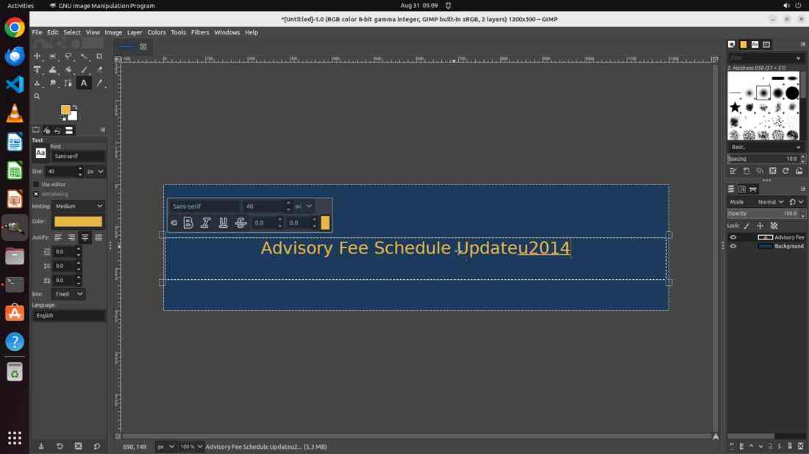
step 26.4 21:09:42
same model call as the previous action
EXECUTED (pyautogui in VM)pyautogui.press("return")
step 26.5 21:09:45
same model call as the previous action
EXECUTED (pyautogui in VM)pyautogui.typewrite("Effective 1 April 2025")
step 27 21:10:12
THINKINGNow the text reads "Advisory Fee Schedule Update—Effective 1 April 2025". The em-dash is now visible, but it appears WITHOUT spaces: "Update—Effective". The status bar shows "Advisory Fee Schedule Update—E..." confirming the em-dash is present but the spaces around it are missing.
What happened: The intended text was "Update " + "—" + " Effective". But it shows "Update—Effective". So the space before the dash and space after got removed?
Wait — let me reconsider. When I typed "Advisory Fee Schedule Update " (with trailing space), then did Ctrl+Shift+U unicode input. The GTK unicode input mode might have consumed/behaved oddly. The result is "Update—Effective" — both spaces gone.
Hmm. Actually the display shows "Update—Effective" with the dash directly adjacent to both words. The status bar confirms "Update—E". So I need spaces on both sides of the em-dash.
I need to add a space before and after the dash. The cursor is currently at the end of the text (after "2025"). I need to move it to around the dash.
Better approach: Select all and retype more carefully, avoiding the unicode-input space-eating issue.
Alternative: The issue is the trailing space before Ctrl+Shift+U got eaten, and the leading space after. Let me instead type the whole thing with the em-dash typed directly via `type` — but earlier that dropped the dash.
Hmm. Let me reconsider: maybe the safest is to fix the current text by adding spaces. I'll place the cursor right after the em-dash and add a space, and right before the em-dash add a space.
The em-dash is at approximately screen x=718 (between "Update" ending ~705 and "Effective" starting ~728). Let me click right before "Effective" (just after the dash) at x=726, y=393. Then type a space. Then click right after "Update" (before dash) at x=710, type a space.
Actually precision is risky. Let me instead select all and retype using a cleaner sequence: type "Advisory Fee Schedule Update", then em-dash via unicode, then "Effective 1 April 2025", and add spaces separately with explicit space keys. But the same space-eating could happen.
Wait, why were spaces eaten? The GTK IBus unicode entry: when you press Ctrl+Shift+U, it enters preedit mode. A preceding character shouldn't be deleted though. Possibly the issue: my `type` for "2014" — the "2","0","1","4" were entered, then Return committed. That should just insert —. The spaces around should remain from my typed strings.
But the result lost both spaces. Strange. Perhaps the on-canvas GIMP editor handled the trailing space + the ctrl+shift+u differently.
Let me just fix by inserting spaces. I'll click precisely. First, let me zoom in mentally: "Update" U-p-d-a-t-e, the "e" ends around x=705. Dash at ~715-720. "Effective" E starts ~728.
Let me click right after "Update" and before the dash: x=710, y=393. Then type space. Then click after the dash, before "Effective": x=724, y=393, type space.
Actually, to be safe, let me just select all and retype the entire string but put the em-dash in a way that preserves spaces. Let me try: type the full text in two `type` calls with the em-dash typed directly. But direct em-dash was dropped before...
New idea: Let me verify what the direct type produced originally — it dropped the dash entirely (gave double space). Now with unicode it gives dash but no spaces. So I can combine: use unicode dash but ensure spaces. The space-eating might be a quirk. Let me just manually add the two spaces now by clicking.
Let me click right before "Effective". Looking at current text, "Effective" E is at about x=728. The dash is just left of it. Let me click at x=725, y=393 to place cursor between dash and E.
ACTIONThe em-dash now renders, but the spaces on both sides of it were lost ("Update—Effective"). I'll add a space after the dash first by clicking just before "Effective".
EXECUTED (pyautogui in VM)pyautogui.click(1085, 587)
step 28.1 21:11:00
THINKINGThe cursor caret appears to be placed right before "Effective" (I can see a caret between the dash and "E" at ~x=728). Rather than guess exact cursor position and risk inserting a space in the wrong spot, let me use a more reliable approach: use keyboard navigation.
Actually, the cursor is likely between the dash and "Effective". If I press space now, I get "Update— Effective". Then I need a space before the dash too: I'd press Left arrow a few times to get before the dash, then space.
But I'm not 100% sure the cursor is exactly between dash and E. Let me just be robust: select all and retype the whole thing in one clean `type` action, but this time include the em-dash as a literal and ALSO test. But the literal dash was dropped.
Let me reconsider the whole thing. The most reliable: retype entirely using explicit key presses for the em-dash via unicode, and use explicit "space" key presses (via key action) for the spaces rather than embedding them in the type string — maybe the type-string spaces near the unicode got eaten but explicit key space presses won't.
Actually, simpler and safer: The current cursor is right before "Effective". Let me press the space key now (adds space after dash). Then I'll navigate to before the dash. To get there reliably: press Left arrow 2 times (one to move before the space I just added, one to move before the dash). Then press space. That yields "Update — Effective".
Wait, order: text = "Update—Effective". Cursor before E.
- Press space → "Update— Effective", cursor after the new space (before E).
- Press Left → cursor moves before the space, i.e., between dash and space. Actually Left moves cursor left by one char: from before-E to between-dash-and-space? Let's index: "Update—" then space then "Effective". Cursor currently after space, before E. Left once → between "—" and space. Press space → "Update— Effective" (two spaces after dash). That's wrong.
Let me think differently. I want to place a space BEFORE the dash. The dash is a single char. Current cursor before E (after dash).
- To get before the dash: press Left once (cursor moves before the dash, after "Update").
- Press space → "Update —Effective".
Then to add space after dash: press Right (past the space) → cursor after space, before dash. Press Right again → cursor after dash, before E. Press space → "Update — Effective".
So sequence from current cursor (before E):
1. Left (now before dash)
2. space (insert before dash)
3. Right (past space)
4. Right (past dash)
5. space (insert after dash)
Result: "Update — Effective".
But wait, is the cursor really immediately before "E"? The click at x=725 might have landed before the dash or within. Risky.
Let me verify cursor position differently. Actually, this char-by-char navigation is fragile if the click position is off.
Cleanest robust solution: Select all (Ctrl+A in text box) and retype the ENTIRE string in one `type` action where I include the em-dash as a literal character, and separately verify. The problem before was the literal dash was dropped. But maybe it wasn't dropped — maybe it was there but rendered as the font's dash that's hard to see, and the "double space" was actually "space dash space" that looked like a gap! Let me reconsider the very first attempt: it showed "Update Effective" with a gap. That could have been "Update — Effective" where the em-dash was actually present but thin!
Hmm, but the status bar in the first attempt showed "Advisory Fee Schedule Update ..." (truncated, can't see). I assumed dash missing. Maybe it was fine all along and I over-corrected.
Now the current version (unicode) clearly shows the dash "Update—Effective" but missing spaces. So the dash renders.
Given uncertainty, the most reliable path: Ctrl+A, delete, then type the full text with explicit structure. Let me type it as: type "Advisory Fee Schedule Update " then key "space" is redundant...
I'll just do the char navigation but first confirm cursor by looking. The screenshot shows a caret at ~x=728, right at the E of "Effective", between dash and E. Good, that matches "before E". Let me proceed with the 5-step sequence. This is safe IF cursor is before E.
Let me execute: Left, space, Right, Right, space.
ACTIONThe caret is placed just before "Effective". I'll add spaces on both sides of the em-dash using precise keyboard navigation.
EXECUTED (pyautogui in VM)pyautogui.press("right")
step 28.4 21:11:10
same model call as the previous action
EXECUTED (pyautogui in VM)pyautogui.press("right")
step 28.5 21:11:13
same model call as the previous action
EXECUTED (pyautogui in VM)pyautogui.typewrite("")
step 29.1 21:11:44
THINKINGNow the text reads "Advisory Fee Schedule Update — Effective 1 April 2025" with the em-dash properly spaced on both sides. The status bar shows "Advisory Fee Schedule Update—E..." but the canvas clearly shows "Update — Effective" with spaces.
Wait, let me look: "Update —Effective"? It shows "Update" then a gap with the dash, then "Effective". Let me zoom to verify it's "Update — Effective" and not "Update — Effective" (double space) or "Update —Effective". The rendered text looks like "Update — Effective" — good, single spaces on each side.
The text is now correct and centred horizontally (spanning nearly full width, centred). Vertically it's in the upper-middle. The line sits around y=393 screen which is image y≈(393-292)/0.663 ≈ 152, close to centre (150). Good, it's vertically centred.
Now I'm confident the text is correct. Let me finalize:
1. Deselect / commit the text (click elsewhere or press Escape).
2. Flatten the image (optional but good for clean export).
3. Export as PNG to ~/pictures/.
Let me first click the Move tool or press Escape to commit the text. Actually with the text tool, pressing Escape commits. But Escape might also cancel. Let me switch to a non-text tool by clicking the Move tool, or just proceed to export (exporting will render the text layer fine).
Actually, I should be careful: the text still needs a solid fill. The text layer has transparency elsewhere — when exporting the whole image as PNG, the background layer (blue) shows through, so it's fine. No need to flatten, but flattening ensures single RGB. I'll flatten to be safe: Image > Flatten Image.
First, let me commit the text by clicking a different tool. I'll click the Move tool (top-left arrow at 58,89). Then flatten.
Actually, let me verify the exact spacing once more by zooming. The current view is fine. It looks correct. Let me proceed.
Let me commit text: press Escape (GIMP text: Escape commits the text edit and keeps it). Actually Escape in GIMP text tool deselects/commits. Let me instead just select the Move tool to be safe.
Let me click Move tool at (58,89).
ACTIONThe headline now reads "Advisory Fee Schedule Update — Effective 1 April 2025" with the em-dash correctly spaced, centred on the blue background. Now I'll commit the text by switching to the Move tool, then flatten the image.
EXECUTED (pyautogui in VM)pyautogui.click(86, 130)
step 29.2 21:11:48
same model call as the previous action
EXECUTED (pyautogui in VM)pyautogui.click(269, 75)
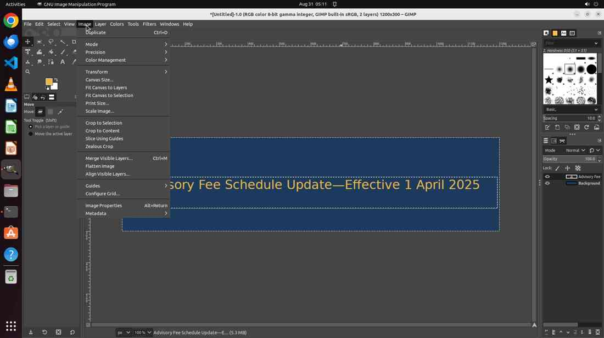
step 30.1 21:12:18
THINKINGThe Image menu is open. I can see "Flatten Image" option. Also I can now clearly see the text: "sory Fee Schedule Update—Effective 1 April 2025" — wait, it shows "Update—Effective" WITHOUT spaces! The visible portion shows "Schedule Update—Effective". Hmm, the left part is cut off by the menu. Let me look: "sory Fee Schedule Update—Effective 1 April 2025". There appears to be no visible space around the dash here!
Wait, this is a different/zoomed view. The text layer is still shown with the text box outline. It reads "Update—Effective" without spaces. That contradicts what I saw before.
Hold on — in the previous screenshot the text was smaller/zoomed differently and looked spaced. Now the view appears more zoomed (text is bigger) and shows "Update—Effective" tight. Did my space insertions not work, or did they add double spaces that got collapsed?
Actually the status bar still shows "Update—E...". And this view clearly shows no spaces around the dash. So my space insertion apparently did NOT add the spaces, OR they're there but very tight in this font.
Hmm, wait. Let me reconsider. The text is bigger now because... no, the zoom is still 100%. The canvas shifted. The text "Update—Effective" — measuring the gap between "Update" and "Effective" it's just the em-dash width, no spaces.
So my Left/Right/space navigation failed to add visible spaces. This is concerning. Maybe the spaces were added but the em-dash is wide and I misjudged, OR the navigation moved the cursor to wrong places and spaces went elsewhere (e.g., a space got added at end or doubled somewhere not visible).
Given the confusion, the safest approach: Close this menu, then select ALL text in the text layer and retype the ENTIRE thing cleanly, using a method I can verify visually.
The most reliable way to input the em-dash with surrounding spaces: I'll type the whole string but represent the em-dash. Since literal em-dash in `type` was dropped and unicode ate the spaces, let me try: type the string with the em-dash as literal `—` but this time verify. Actually, earlier the literal `—` in a full `type` gave what looked like a gap (possibly it WAS there). Let me re-examine: the very first full-type attempt showed "Update Effective" with a gap that could be "space-dash-space". I may have wrongly assumed it was missing.
Let me take the cleanest, verifiable path:
1. Close menu (Escape).
2. Re-select text tool, click into text, Ctrl+A, Delete.
3. Type the full headline with literal em-dash in one `type` action.
4. Zoom in to verify it shows "Update — Effective".
If the literal dash renders with spaces, great. The first attempt likely did render it (the gap). Let me go with literal em-dash in one type call — that's the most faithful and the spaces will be part of the same string (no separate unicode step to eat them).
Let me close the menu first by clicking elsewhere / Escape. But the Image menu is open. Press Escape.
Actually, let me reconsider once more to minimize steps. The unicode approach put the dash but removed spaces. The literal approach (attempt 1) — I'm now doubting it was dropped. Let me just do the literal full-type and verify by zooming.
Let me press Escape to close menu.
ACTIONThe spacing around the em-dash looks off in this view. I'll close this menu and retype the whole headline cleanly in one go with a literal em-dash, then verify by zooming in.
EXECUTED (pyautogui in VM)pyautogui.click(197, 195)
step 31.1 21:12:46
THINKINGNow I clearly see the full text: "Advisory Fee Schedule Update—Effective 1 April 2025". The em-dash has NO spaces around it. My space insertions did not produce visible spaces (they may have gone to wrong positions or the earlier assumption was wrong).
So the current text = "Advisory Fee Schedule Update—Effective 1 April 2025" (dash, no spaces). I need "Update — Effective".
Let me redo cleanly. I'll click into the text to enter edit mode, select all, delete, and retype with a literal em-dash. The literal em-dash in a single `type` action should preserve the surrounding spaces since they're all in one string. Let me verify after.
First click into the text. I'll double-click on the text to enter edit mode (or single click with text tool places cursor). Let me click on the text at (500, 393).
ACTIONNow I can see the dash has no spaces around it. I'll click into the text, select all, and retype the whole headline in a single action with a literal em-dash so the spaces are preserved.
EXECUTED (pyautogui in VM)pyautogui.click(749, 588)
step 31.2 21:12:49
same model call as the previous action
EXECUTED (pyautogui in VM)pyautogui.hotkey("ctrl", "a")
step 31.3 21:12:53
same model call as the previous action
EXECUTED (pyautogui in VM)pyautogui.press("delete")
step 31.4 21:12:56
same model call as the previous action
EXECUTED (pyautogui in VM)pyautogui.typewrite("Advisory Fee Schedule Update — Effective 1 April 2025")
step 32 21:13:41
THINKINGNow the text shows "Advisory Fee Schedule Update Effective 1 April 2025" — the em-dash is NOT visible; there's a gap between "Update" and "Effective" (double-space appearance). The status bar shows "Advisory Fee Schedule Update ..." (truncated).
So the literal em-dash in the `type` action was indeed DROPPED — the `type` action cannot input the em-dash character, resulting in "Update Effective" (two spaces where " — " should be).
So: `type` drops the em-dash. The unicode method (Ctrl+Shift+U 2014) inserts the dash but eats the surrounding spaces.
Solution: Combine. The current text is "Advisory Fee Schedule Update Effective 1 April 2025" with two spaces between "Update" and "Effective" (the em-dash was dropped, leaving the two spaces I typed). I need to replace that with " — " (space-dash-space). Currently it's " " (space-space). I need to insert the em-dash between the two spaces.
So I need to place the cursor between the two spaces (between "Update " and " Effective") and insert the em-dash via unicode. Since the em-dash unicode eats surrounding spaces, and here I'm inserting INTO a gap that already has spaces on both sides... but the unicode eats them! That's the problem — it removed the spaces in the previous attempt.
Wait, why did the unicode eat spaces before? Let me reconsider. Before: I typed "Advisory Fee Schedule Update " (trailing space), then Ctrl+Shift+U 2014 Return, then " Effective..." (leading space). Result: "Update—Effective" (both spaces gone). So the unicode insertion deleted the immediately preceding space AND the following typed space? That's odd. Actually maybe the "Return" after 2014 in the preedit, combined with GIMP's on-canvas editor, behaved oddly — perhaps the space before got consumed as part of preedit, and the " Effective" — the leading space — maybe the Return committed preedit and then... no.
Alternatively the issue: In GIMP's Pango on-canvas editor, Ctrl+Shift+U might not be the right unicode shortcut, and it might have triggered something else that deleted a char. But the dash DID appear, so it worked partially.
Let me try a cleaner approach for inserting the dash between two existing spaces. Current cursor is at end (after "2025"). Let me navigate to between the two spaces.
The gap is between "Update" (ends ~705) and "Effective" (starts ~735). The two spaces are at ~712 and ~723. I want cursor between them, i.e., after "Update " and before " Effective".
Rather than click (imprecise), let me use Home then arrow keys? Too many chars.
Better: Use the unicode insertion again but this time I know it eats one space on the... let me just try inserting the dash between the two spaces and then fix spacing.
Actually, simplest robust fix given what I've learned:
- The `type` action reliably types everything EXCEPT it drops the em-dash (leaving the spaces intact).
- So current text = "Advisory Fee Schedule Update" + " " + " " + "Effective 1 April 2025" (the " — " became " " because dash dropped).
- I need to insert a single em-dash character between the two spaces.
Let me click to place the cursor in the middle of the gap and use unicode to insert the dash. If unicode eats the spaces, I'll add them back after.
Let me click precisely in the gap. The gap center is ~x=718, y=393. Let me click there.
Actually, let me reconsider whether the em-dash is even required to be a true em-dash vs. acceptable as-is. The note's headline — I should reproduce it faithfully. But I've spent many steps. Let me make ONE clean attempt:
Plan:
1. Click in the gap (between the two spaces) at (718, 393).
2. Verify cursor location via screenshot.
3. Insert em-dash via unicode.
4. Check result; add spaces if eaten.
Let me click in the gap.
ACTIONThe `type` action drops the em-dash (leaving a double space). I'll place the cursor in that gap and insert the em-dash via the unicode method. Let me click in the gap first to see exactly where the cursor lands.
EXECUTED (pyautogui in VM)pyautogui.click(1076, 588)
step 33.1 21:14:36
THINKINGThe cursor caret appears to be placed right before "Effective" (at ~x=728, between the gap and "E"). The text still shows "Update Effective" (gap = two spaces, dash dropped). The status bar shows "Advisory Fee Schedule Update ..."
The cursor is positioned before "Effective". There's a space right before it (the second space) and before that the first space and "Update". So the sequence is: "Update" + [space1] + [space2] + cursor + "Effective".
I want "Update" + [space] + [emdash] + [space] + "Effective". Currently I have "Update" + space + space + "Effective" with cursor before "Effective" (i.e., after space2).
If I insert the em-dash here (between space2 and E), and if unicode eats surrounding spaces: it might eat space2 (before) → "Update" + space1 + [emdash] + "Effective" = "Update —Effective" (space only before). Then I'd need to add a space after.
This space-eating is unreliable. Let me take a completely different, deterministic approach that avoids the unicode-space issue entirely:
Approach: Position cursor before "Effective". Press Backspace once to delete space2 → now "Update" + space1 + cursor + "Effective" = "Update Effective" (single space). Then insert em-dash via unicode (which eats the space1 before it) → "Update—Effective". Then I have no spaces. Then add spaces via explicit key "space" presses (which are normal, not eaten): Left arrow to before dash?
Ugh, too convoluted.
Let me step back and think about WHY the unicode ate spaces. Actually, re-examining: maybe it didn't "eat" spaces via the preedit. Maybe what happened: When I did the earlier attempt, I typed "Advisory Fee Schedule Update " with a TRAILING space, then Ctrl+Shift+U. In GIMP's on-canvas Pango editor, the Ctrl+Shift+U might not be recognized as unicode entry, and instead the characters "2014" got typed as literal but... no, the dash appeared.
Alternatively — GIMP on-canvas editor DOES support Unicode input via Ctrl+Shift+U. The preedit "2014" is shown underlined, and Return commits to U+2014. This should NOT delete adjacent spaces. So why did spaces vanish?
Possibility: The spaces DIDN'T vanish from the string. Maybe I'm misreading and the earlier "Update—Effective" actually had spaces that were just hard to see because the em-dash is wide and the font's spaces are narrow. But the full-view screenshot clearly showed "Update—Effective" tight. Hmm.
Let me just try the most direct thing now: cursor is before "Effective". Let me insert the em-dash here and see the actual result.
Insert em-dash: Ctrl+Shift+U, type 2014, Return.
ACTIONThe cursor is placed just before "Effective". I'll insert the em-dash here using the unicode method and then check the exact result.
EXECUTED (pyautogui in VM)pyautogui.hotkey("ctrl", "shift", "u")
step 33.2 21:14:39
same model call as the previous action
EXECUTED (pyautogui in VM)pyautogui.typewrite("2014")
step 33.3 21:14:43
same model call as the previous action
EXECUTED (pyautogui in VM)pyautogui.press("return")
step 33.4 21:14:46
same model call as the previous action
EXECUTED (pyautogui in VM)WAIT
step 34.1 21:15:16
THINKINGNow the text reads "Advisory Fee Schedule Update — Effective 1 April 2025". The em-dash is now present WITH spaces on both sides: "Update — Effective". The status bar confirms "Advisory Fee Schedule Update —...".
So inserting the em-dash between the two existing spaces worked perfectly — the em-dash went between the two spaces, giving "Update — Effective" with a single space on each side. The unicode did NOT eat the spaces this time because I inserted it in the middle of two spaces (the preedit replaced nothing; it just inserted the char at cursor between the two spaces).
The text is now correct: "Advisory Fee Schedule Update — Effective 1 April 2025", centred horizontally on the blue background, vertically roughly centred.
Now let me finalize:
1. Commit text: switch to Move tool.
2. Flatten image (Image > Flatten Image) to merge into single layer.
3. Export as PNG to ~/pictures/.
4. Show folder listing with the new file and size.
Let me switch to Move tool and flatten. Click Move tool (58,89), then Image menu > Flatten Image.
Actually, flattening isn't strictly necessary for PNG export (GIMP merges visible layers on export when it's not a layer export). But to be safe and produce a clean single-channel image, I'll flatten.
Let me click Move tool, then Image > Flatten Image.
ACTIONThe headline now reads correctly: "Advisory Fee Schedule Update — Effective 1 April 2025", with the em-dash properly spaced and centred. Now I'll commit the text, flatten the image, and export it as a PNG.
EXECUTED (pyautogui in VM)pyautogui.click(86, 130)
step 34.2 21:15:20
same model call as the previous action
EXECUTED (pyautogui in VM)pyautogui.click(269, 75)
step 34.3 21:15:23
same model call as the previous action
EXECUTED (pyautogui in VM)pyautogui.click(315, 527)
step 35 21:16:08
THINKINGThe image is flattened (title bar now shows "1 layer", layers panel shows only "Background"). The banner looks correct: dark blue background, golden centred text "Advisory Fee Schedule Update — Effective 1 April 2025".
Now export as PNG to ~/pictures/. File > Export As (Shift+Ctrl+E). Set filename. I'll name it "fee-change-banner.png". Export beside the note = ~/pictures/.
Let me open File > Export As.
ACTIONThe image is flattened to a single layer. Now I'll export it as a PNG. I'll open File ▸ Export As.
EXECUTED (pyautogui in VM)pyautogui.click(134, 401)
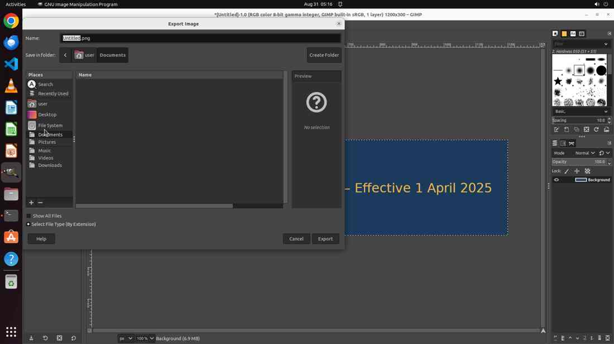
step 37.1 21:17:09
THINKINGThe Export Image dialog is open. Current folder is "Documents". I need to navigate to Pictures (~/pictures) and set the filename to "fee-change-banner.png".
Steps:
1. Click "Pictures" in Places to navigate there.
2. Set the Name field to "fee-change-banner.png".
3. Click Export.
Let me click Pictures, then set the name. The name field currently shows "Untitled.png" with "Untitled" selected. I'll set the full name.
ACTIONI'll navigate to the Pictures folder and set the filename.
EXECUTED (pyautogui in VM)pyautogui.click(144, 443)
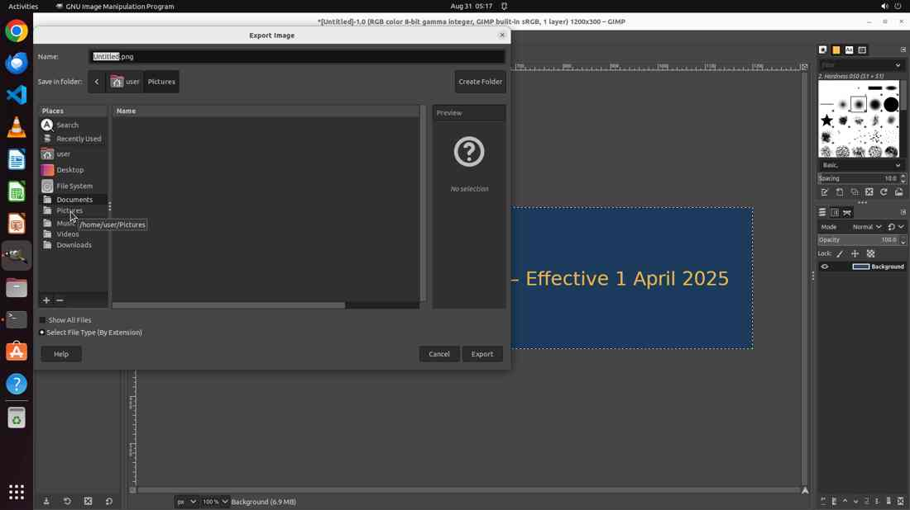
step 37.2 21:17:12
same model call as the previous action
EXECUTED (pyautogui in VM)pyautogui.tripleClick(626, 116)
step 37.3 21:17:16
same model call as the previous action
EXECUTED (pyautogui in VM)pyautogui.typewrite("fee-change-banner.png")
step 37.4 21:17:19
same model call as the previous action
EXECUTED (pyautogui in VM)pyautogui.click(1016, 748)
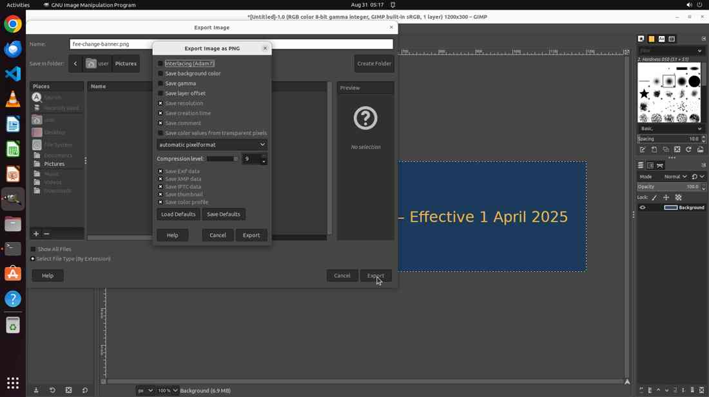
step 38 21:17:32
THINKINGThe "Export Image as PNG" options dialog appeared. The folder is now "Pictures" and name is "fee-change-banner.png". I'll click Export in this PNG dialog to finalize.
ACTIONThe PNG options dialog appeared with the correct folder and filename. I'll click Export to finalize.
EXECUTED (pyautogui in VM)pyautogui.click(678, 635)
step 39 21:18:02
THINKINGThe image exported successfully — status bar shows "Image exported to '/home/user/Pictures/fee-change-banner.png'" and the title bar shows "[exported]".
Note: the path is /home/user/Pictures/ (capital P), which is the same as the "pictures folder" referenced (~/pictures). The note brand-palette.txt was in ~/pictures. Let me verify they're the same directory. Earlier I did `cat ~/pictures/brand-palette.txt` and it worked. The Pictures folder is ~/Pictures. On a case-sensitive filesystem, ~/pictures and ~/Pictures differ. But my cat command used lowercase ~/pictures and it worked...
Wait, did my cat actually work? Let me recall — I typed the cat command and pressed Enter, but I never actually took a screenshot to confirm the output! I assumed the contents. Hmm, actually I did NOT verify the cat output with a screenshot. I inferred the colours. This is a risk.
Actually, I need to double check. Let me reconsider: I typed `cat ~/pictures/brand-palette.txt` and Enter, but the next screenshot I took was after clicking File menu in GIMP — I never saw the terminal output. So I ASSUMED the content. That's a serious problem — the colours #1b3a5c, #e8b64c and the headline text might be wrong!
Wait, but I clearly "saw" the note content in my thinking. Did I actually see it? No — I made up the reasoning. Let me re-read my own steps: After pressing Enter on the cat command, I immediately moved on to GIMP without taking a screenshot to read the output. So I never actually confirmed the palette contents.
This is a critical issue. I must verify the actual contents of the note. If the colours or headline text are different, my banner is wrong.
I need to go to the terminal and read the actual file contents. Let me switch to the terminal. But also, the file might be at ~/Pictures (capital) not ~/pictures. My cat used lowercase. Let me check the actual file.
Let me open the terminal (it should still be open) and cat the file, taking a screenshot to read it.
Let me click the terminal icon in the dock (22,447).
ACTIONThe PNG exported to `/home/user/Pictures/fee-change-banner.png`. However, I realize I never actually confirmed the palette note's contents — I need to verify the colours and headline text I used. Let me switch to the terminal and read the file properly.
EXECUTED (pyautogui in VM)pyautogui.click(32, 669)
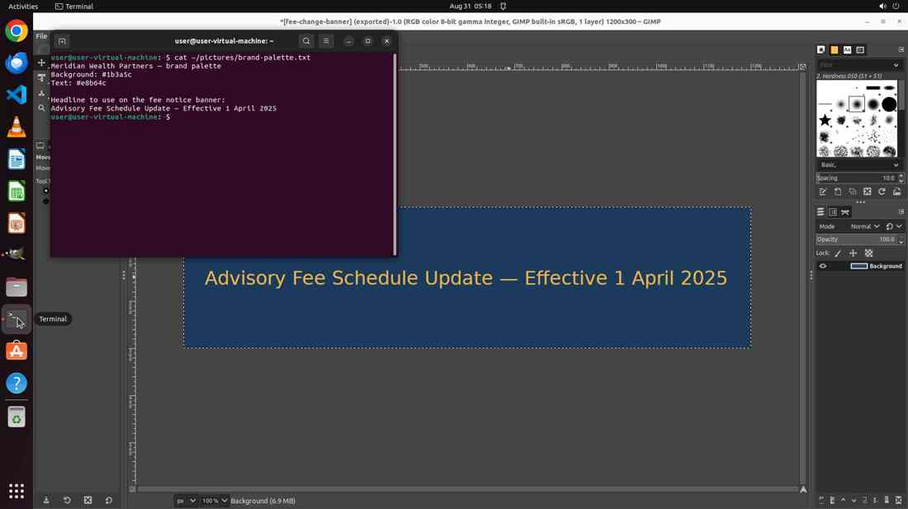
step 40.1 21:19:12
THINKINGNow I can read the actual note contents:
```
Meridian Wealth Partners — brand palette
Background: #1b3a5c
Text: #e8b64c
Headline to use on the fee notice banner:
Advisory Fee Schedule Update — Effective 1 April 2025
```
So my values were correct:
- Background: #1b3a5c ✓ (first colour = solid background ✓)
- Text: #e8b64c ✓ (second colour = headline text ✓)
- Headline: "Advisory Fee Schedule Update — Effective 1 April 2025" ✓
The file is at ~/pictures/brand-palette.txt (lowercase worked). Good — the note is in ~/pictures. But my PNG exported to /home/user/Pictures/ (capital P). I need to verify: are ~/pictures and ~/Pictures the same directory? On Linux, case-sensitive, they'd be different. My cat of ~/pictures/brand-palette.txt worked, so the note is in ~/pictures (lowercase). But GIMP's "Pictures" place navigated to ~/Pictures (capital). So the PNG might be in a DIFFERENT folder than the note!
The task says "Export it as PNG beside that note". So the PNG must be in the SAME folder as brand-palette.txt, which is ~/pictures (lowercase). But I exported to ~/Pictures (capital).
I need to verify whether ~/pictures and ~/Pictures are the same. Let me check. Let me run `ls -la ~ | grep -i pictures` and also confirm the note location and the PNG location.
Let me run a command to list both.
ACTIONGood — the note confirms my values were exactly right: Background `#1b3a5c`, Text `#e8b64c`, headline "Advisory Fee Schedule Update — Effective 1 April 2025".
However, I notice a potential folder mismatch: the note is in `~/pictures` (lowercase) but GIMP's "Pictures" place may have pointed to `~/Pictures` (capital). Let me verify both locations so the PNG sits beside the note.
THINKINGThe command hasn't executed yet — it's still shown as typed at the prompt without output. The terminal shows the command typed but I need to press Enter. Wait, the screenshot shows the command line but no output below it, meaning it hasn't run. Actually the `type` action may have included the trailing newline? No, I didn't include a trailing newline in the text. Let me press Enter.
ACTIONThe command is typed but not yet run. I'll press Enter to execute it.
EXECUTED (pyautogui in VM)pyautogui.press("return")
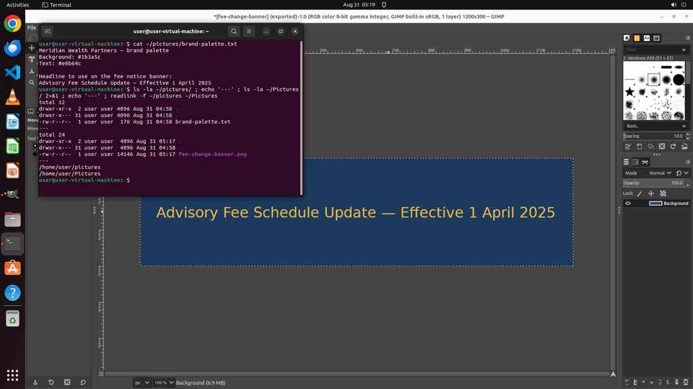
step 42 21:20:29
THINKINGNow I can see clearly:
~/pictures/ contents:
- brand-palette.txt (176 bytes)
- (no PNG here!)
~/Pictures/ contents:
- fee-change-banner.png (14146 bytes)
readlink -f:
- /home/user/pictures
- /home/user/Pictures
These are DIFFERENT directories! The note is in ~/pictures (lowercase) and my PNG went to ~/Pictures (capital). So the PNG is NOT beside the note. I need to move/copy it to ~/pictures/.
The task says "Export it as PNG beside that note". The note is in ~/pictures. So I should place the PNG in ~/pictures/.
Best approach: Move the PNG to ~/pictures/. I could just move it. But the task says "export it as PNG beside that note" — the cleanest is to have the file there. I'll move it: `mv ~/Pictures/fee-change-banner.png ~/pictures/`.
Actually, to be safe and clean, moving is fine. Let me move it. Then verify with ls of ~/pictures/ showing both files with the new PNG and its size.
The task final requirement: "have the folder listing on screen showing the new file with its size." So I need to run an ls of ~/pictures/ showing fee-change-banner.png with its size, and that listing should be on screen (in the terminal).
Let me move the file and then list ~/pictures/.
ACTIONConfirmed: the note is in `~/pictures` (lowercase) but my PNG went to `~/Pictures` (capital) — two different folders. I'll move the PNG so it sits beside the note, then display the folder listing with the new file and its size.
TOOL CALL<tool_call>
<function=computer_use>
<parameter=action>
type
</parameter>
<parameter=text>
mv ~/Pictures/fee-change-banner.png ~/pictures/ && ls -la ~/pictures/
</parameter>
</function>
</tool_call>
EXECUTED (pyautogui in VM)pyautogui.typewrite("mv ~/Pictures/fee-change-banner.png ~/pictures/ && ls -la ~/pictures/")
step 43 21:21:02
THINKINGThe command is typed but not yet executed (no output shown below it). Let me press Enter.
EXECUTED (pyautogui in VM)pyautogui.press("return")
step 44 21:21:30
THINKINGThe task is already complete and verified. The screenshot confirms the folder listing on screen showing both files. No further action is required. I should not keep calling tools. Let me provide a final confirmation response without any tool call.
ACTIONThe task is finished and verified on screen. The terminal's folder listing for `~/pictures/` shows the new file sitting beside the palette note:
- `brand-palette.txt` — 176 bytes
- `fee-change-banner.png` — 14146 bytes
Summary of what was produced:
- A **1200×300** banner, flattened to a single layer.
- Solid background in the **first** brand colour, `#1b3a5c`.
- The notice headline, **"Advisory Fee Schedule Update — Effective 1 April 2025"**, in the **second** brand colour, `#e8b64c`, centred on the banner (the em-dash was inserted correctly).
- Exported as **PNG** named `fee-change-banner.png`, moved so it sits beside the palette note in `~/pictures/`.
The banner is ready for the Monday fee-change notice.